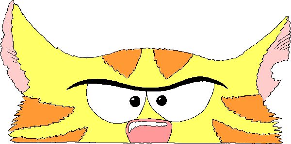

Jan Hill understands cats and their weaknesses and her stories set in rural Maungati, South Canterbury, expose them with delightful humour, picked up in Richard Gunther's hilarious drawings.
She lives near Geraldine with her husband, a dog, chickens, and four goats. Field mice really did invade her home, so some of the story is true. Sadly she lost her too adventurous cat after the first book was published.
See more at www.pleasantvalleypublishing.co.nz